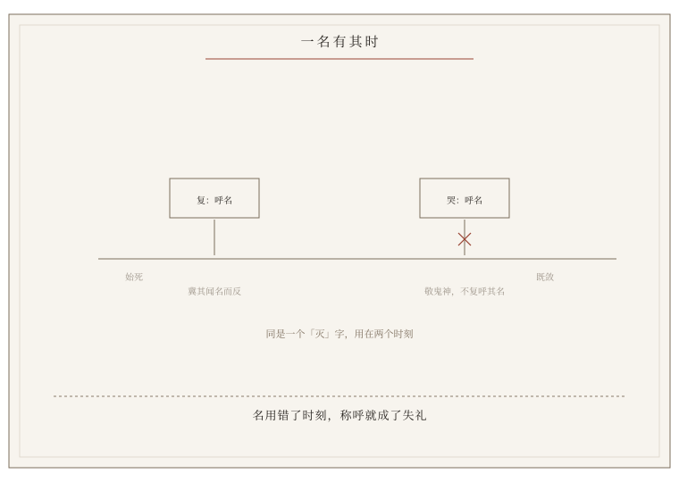

檀弓上 · 三·八十五 · 第 288 课
子蒲卒，哭者呼滅。子皋曰：「若是野哉！」哭者改之。
说什么事：子蒲死了，哭的人喊着「灭」。子皋说：「怎么这样粗野！」哭的人就改了。
落在哪一层：礼之细目，落在一声称呼上。论「一名有其时」。
为何编在此位：上节论丧服之质料，此节论哭丧之称呼。一论衣，一论声，皆末节，而皆见礼。
【经】子蒲卒，哭者呼滅。子皋曰：「若是野哉！」哭者改之。
【注】滅，蓋子蒲名。非之也。唯復呼名。子皋，孔子弟子高柴。
【疏】此一节论哭者呼名非礼之事。灭，子蒲名。子蒲卒，哭者呼其名，故子皋曰「若是野哉」——野，不达礼也。「唯复呼名，冀其闻名而反」；哭则敬鬼神，不复呼其名。而此家哭独呼「灭」，子皋深讥之，故云「野哉」也。非之乃改也。
子蒲 其人字（或名）蒲，名灭。注「灭，盖子蒲名」。
呼灭 喊「灭」。哭时喊死者的名。
子皋 孔子弟子高柴，字子皋。
野 粗野、不达礼。疏「野，不达礼也」。
复 招魂之礼。人始死，登屋呼其名以招其魂，冀其闻而返，谓之复。
不复呼其名 哭的时候不再喊名。
子蒲死了，哭的人喊着「灭」。子皋说：「怎么这样不达礼！」哭的人就改了。
此节极短，讲的是同一个名字在两种场合的两种用法。
疏把界线划得很清楚：「唯复呼名，冀其闻名而反；哭则敬鬼神，不复呼其名。」
复（招魂）时，必须喊名字——喊名是为了让他听见、让他回来。这是呼唤，对象还在。
哭时，不能喊名字——哭的对象已经不在，喊名是把死者当作还能应答的人。所以哭时不呼名，「敬鬼神」：把他当另一个界域里的存在来敬，而不当还能应声的家人来喊。
同一名字，一处可用，一处不可用。用错了，不达礼。
第一层 「野」这个判语的分量 子皋不说「非礼」，说「野」。野者，不达礼——不是故意违礼，是不知道有这条。这个判法比「违礼」轻，也比「违礼」准：哭的人不是不敬，是不懂。
第二层 一名的场合学 此节可与 278 节合看。278 论「一言必有其地」：一句话离开它的语境就成了假话。此节论「一名必有其时」：一个名字用在错的时刻，就成了失礼。同一原理，落在言与名两处。
进一步说：名是最近的关系，也是最容易用错的东西。越是亲近的称呼，越容易在不该用的场合冲口而出。礼在这里设了一道闸。
第三层 「改之」二字 经末两个字的动作，是全节的收束：被指出来，就改了。没有辩解，没有反问。礼的日常运行，靠的正是这种当即改。
第四层 为什么哭不呼名 呼名是「我找你」；哭是「我送你」。前者还把他当在者，后者已经承认他不在。一声称呼里，藏着对生死的整个判断。所以礼不放过这一声。
与今日何干 今人送别，多的是直呼其名，甚至在告别式上喊「某某，你走好」。此节不是说这样错，而是提醒：称呼里带着一个判断——他是还能应答的，还是已经去了。想清楚这一层，称呼自然就对了。
| 左 | 右 |
|---|---|
| 复时呼名 | 冀其闻名而反 |
| 哭时不呼名 | 敬鬼神 |
| 哭者呼灭 | 用错了场合 |
| 若是野哉 | 不达礼 |
| 野 | 不知，非故违 |
| 哭者改之 | 当即改 |
| 一名的场合 | 名必有其时 |
| 一声称呼 | 藏着对生死的判断 |
画一间丧家的堂屋，视点平。堂上一位深衣者（侧身、仰面、口微张作呼啸状，不画人面细节）；其旁另有一位深衣者（正面、抬手作止状）。两人之间地上摊着一件素衣（未穿、平铺）。堂的一角立着一根短竿，竿上系着一条素帛（帛尾下垂）。不写文字。赭色只用在仰面者胸前衣襟的一道折线，与那根短竿的竿顶。
